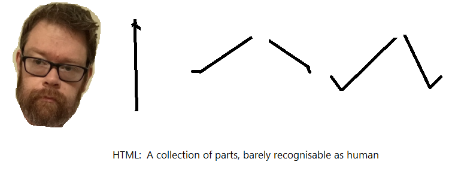
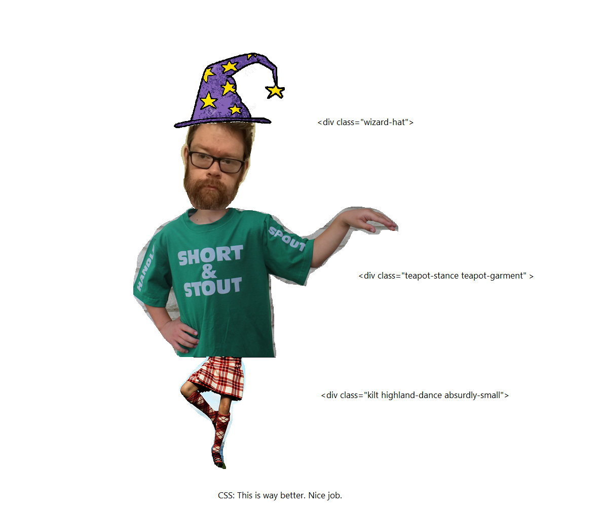
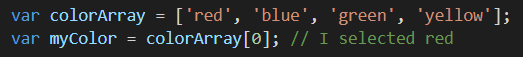
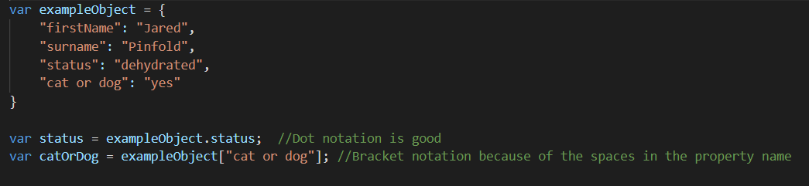

Let's imagine HTML is a collection of objects. An analogy might be they're pieces of a paper doll, but all in a row.
Carry on that extremely fragile analogy, CSS is a list of instructions on how to colour in the pieces and arrange them together to make a person shape
 Control flow is the order in which the computer executes lines of code, and it is generally sequential from top to bottom, but can be modified by the use of loops and functions.
The order in which the code is executed is very important. Imagine if you put your shoes on before you put your socks on. Chaos. Chaos of the same magnitude as if you went to return the value of a variable which had not been declared yet.
Loops allow you to run the same code over and over until certain criteria are met. A real world example would be:
The "Document Object Model", or the DOM is the framework which allows the HTML, CSS and Javascript components of a website to interact with eachother. The DOM is created by the browser itself when the webpage is loaded.
It's easy to visualise the DOM as a tree, with many branches (or nodes) coming out from each broad category. Each div and image that exists in the HTML is a node, for example, as is each class or id.
You can also think of the DOM as a map. You can use that DOM to allow JavaScript functionality to interact with different parts of the website by providing directions via a path starting at a high-level item in the tree, and adding more specificity as it goes. eg: document.getElementByID('jared') means we're starting at the Document level (kind of the basic catch-all where most content lives), followed by specifying we're looking for an ID, and then specifying the particular ID we're looking for. Once I've established a "pathway" to that ID, I can ineract with it and add functionality to it.
Arrays and Objects are two different kinds of variables which contain multiple pieces of data inside them.
You could think of an array as a list of things, and you access the items on the list but specify the position of the thing on the list. The positions are referred to numerically, in a square bracket, and the numbered list starts at 0, so the first thing in the list is 0.
And you can think of an Object as a 2-column table of information where each item of data has a category title. When referring to an item in the Object, you specify the name of the item you're looking for.
There are 2 ways to specify an item in the object: dot notation, and square bracket notation. Dot notation is faster to type, so is the preferred method, but can't handle any spaces in the name. Square bracket notation can handle spaces, but is slightly more effort to type out.
A function is a self contained piece of code which you write once and then can re-use and use different inputs for it each time.
Imagine it like this: You have a list of excercises you do at the gym, and in your day planner you could itemise them out one by one for every visit to the gym, or you can just write "Arms day", and you'll do all of the individual exercises you do at the gym are written in your exercise plan called "Arms day" without having to write out each individual exercise on the calendar... now, you could also have an extra bit of information that you put on the calendar, like "Arms day (normal)" or "Arms day (increase)", and that tells you to do the same set of exercises but with different weights in each instance.